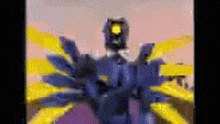

Glammed Abysses es un proyecto de Minecraft el cual busca expandir la exploración subterranea del juego, agregando biomas y materiales nuevos, fue creado usando las herramientas brindadas por Mojang Studios. Se utilizo archivos Json para definir cada bloque, las textura y sus animaciones, las particulas, los sonidos, etc, y se utilizo JavaScript para el funcionamiento de los bloques, gracias a la API de Minecraft. Se uso el IDE Bridge para su desarrollo.
Las texturas y modelos fueron personalizadas por mi, usando el programa Blockbench, el cual es un editor de imagenes y a la vez un programa de diseño 3D dedicado al estilo low-poly y a voxels.